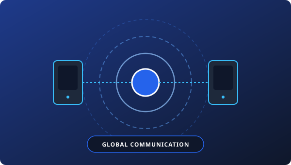

Communication & Global Networks

Modern technology has revolutionized communication. Smartphones, instant messaging apps, and video conferencing platforms allow people to connect across distances instantly. Social media networks have created global communities, enabling the exchange of ideas and cultures.
1. Mobile Infrastructure & Ubiquitous Computing
The transition from legacy analog landlines to ubiquitous 4G/5G mobile smartphones represents the single fastest technology adoption in human history. Over 5.5 billion individuals now utilize mobile cellular networks, enabling instant access to global knowledge repositories, financial systems, and communication channels.
2. Instant Messaging Protocols & VoIP
IP-based communication protocols (such as WebSockets, SIP, and encrypted XMPP) have replaced SMS with end-to-end encrypted instant messaging. High-definition Voice over IP (VoIP) eliminates traditional long-distance telecommunication tariffs, allowing seamless cross-continental collaboration.
3. Video Conferencing & Global Virtual Workspaces
High-definition multi-peer video platforms facilitate enterprise operations, diplomatic discussions, and personal relationships regardless of geographic separation. Real-time media routing and low-latency audio codec algorithms bridge continents in milliseconds.
Key Societal Impact
Global intercultural exchange has dismantled isolationist barriers. Communities can mobilize around shared international goals, humanitarian relief, scientific discoveries, and cultural preservation in real time.
4. Exam Focus Points
- Core Enablers: Fiber-optic backbones, 5G/6G base stations, satellite constellations (Starlink), and smartphone microprocessors.
- Primary Benefits: Real-time information dissemination, global crisis coordination, frictionless trade communication.
- Critical Dilemma: Information overload, echo chambers, and loss of nuanced physical interaction.